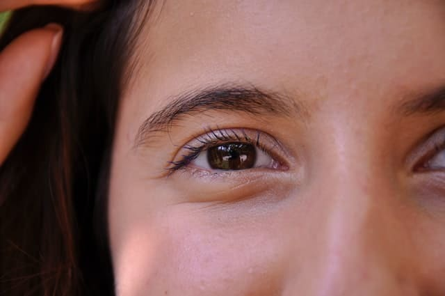
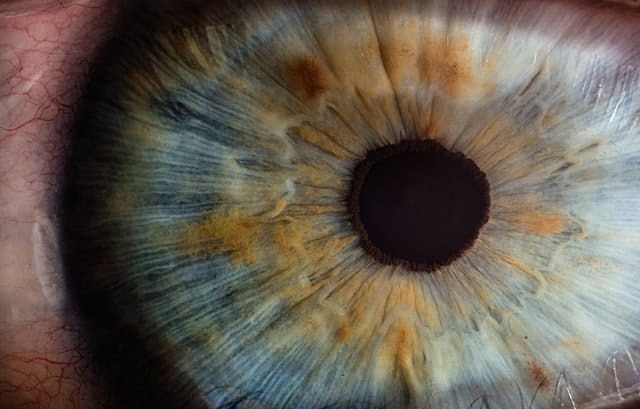

マイボーム腺機能不全の鍼灸
マイボーム腺の詰まりや炎症で涙の油分が不足する状態です。眼科治療と温め・洗浄ケアに加え、鍼灸で目周囲の巡りを整えます。
まず知っておきたい要点と改善の流れ
まぶたの縁にあるマイボーム腺が詰まったり炎症を起こしたりして、涙の油層を支える脂質の分泌が低下・変質する状態です。40歳以降、特に60歳以上の約半数にみられる加齢変化が主な背景ですが、若年層でもアイメイクの残留や細菌感染、長時間の画面作業、乾燥環境、アレルギー、ホルモン変動、睡眠不足などが引き金になります。油分不足により涙が蒸発しやすくなり、ドライアイ症状が悪化します。（公式解説）
このようなお悩みはありませんか？
- ✓目が乾きやすく、かすみや疲れを強く感じる
- ✓目やにやかゆみ、ゴロゴロした違和感が続く
- ✓充血やものもらいをたびたび繰り返している
- ✓点眼薬をさしても不快感や乾燥感がすっきりしない
当院の施術アプローチ・改善の流れ
なぜ鍼灸で改善へ向かうのか？（作用機序の図解）
マイボーム腺機能不全に対する鍼灸は、後頸部〜眼周囲の微小循環と毛様体筋・自律神経調整機序を通じて、お体本来の回復力を引き出します。

眼球周囲の危険な深刺しを避け、風池・天柱・合谷・太衝など安全な経穴へ繊細に施術します。
PC・スマホ作業や緊張で固まった首深層筋と眼輪筋周囲の血流を促し、重だるさを軽減します。
交感神経優位による目の乾き・ピント調節疲労を鎮め、涙液分泌とリラックス反応を助けます。
眼科の点眼・定期検査を最優先としつつ、日々の眼精疲労や頭痛・肩こりの連鎖を整えます。
院長YouTube解説・関連動画
公開日：２０２１年 １２月２３日
更新日：２０２２年 １月１７日
本日はマイボーム腺機能不全について解説させていただきます。

☆本記事の内容
- •マイボーム腺機能不全とは
- •マイボーム腺機能不全の原因
- •マイボーム腺機能不全の症状
- •マイボーム腺機能不全の改善方法
- •マイボーム腺機能不全のまとめ
- •マイボーム腺機能不全はマイボーム腺が炎症を起こし働きが悪い状態
- •マイボーム腺機能不全の原因の多くは、加齢
- •マイボーム腺機能不全の症状は、目の周りに起きる色々な不快感
- •マイボーム腺機能不全の改善方法は、目の周りのケアと薬
- •日々のケアが非常に大事
- •マイボーム腺機能不全の改善例
銀座そうぜん鍼灸院の宗前です。
このページを書いている私は、鍼灸師として１３年、担当した利用者様数８０，０００人を誇り、病気の休職者３００人を社会復帰できるまで回復させてきた実績があります。
マイボーム腺機能不全の症状は、目の周りに起きる色々な不快感
マイボーム腺機能不全の症状は、目の周りに起きる色々な不快感です。
目の疲れや目やに、目の痒みや違和感、目の乾燥などの自覚症状があることが多いです。ものもらいができやすくなることもあります。
マイボーム腺機能不全によって質の悪い脂分が出るようになるとドライアイになることもあります。睫毛の異常が起きて、睫毛乱生が起きることもあります。
1. 目の乾燥感と不快感：
MGDによってメイボーム腺の脂質の分泌が減少するため、涙の蒸発が防げず目の表面が乾燥しやすくなります。このため、目の乾燥感が生じ、目がかすんでいるように感じることがあります。乾燥による不快感は日常生活にも影響を及ぼし、集中力の低下や作業効率の低下などが起こることがあります。
2. 目のかゆみと痛み：
MGDによって涙の蒸発が増加すると、目の表面が乾燥し、かゆみや痛みを引き起こすことがあります。目をこする行為は一時的に症状を和らげるかのように感じるかもしれませんが、実際には症状を悪化させる原因となります。
3. 涙の量が減少：
MGDによって涙の蒸発が増加するため、涙の製造が追いつかず、涙の量が減少することがあります。涙液は目の表面を保護し、異物を洗い流す役割を果たしているため、涙の不足は目の健康に影響を及ぼします。
4. 目の充血：
MGDによって目の乾燥が引き起こされると、目の表面が刺激されることがあります。これにより目の充血が生じ、目の血管が拡張して赤くなることがあります。
5. 点状角膜上皮異常：
MGDによって目の表面が乾燥すると、角膜上皮に点状の損傷が生じることがあります。これは点状角膜上皮異常として知られており、目の乾燥やかすみ感に寄与することがあります。
6. まつげの異常：
MGDによってメイボーム腺の脂質の分泌が減少すると、まつげが弱くなることがあります。まつげが抜けやすくなり、まつげの成長が乱れることもあります。
7. 結膜炎：
MGDによって涙の蒸発が増加すると、目の表面が乾燥し、結膜に炎症が生じることがあります。結膜炎は目の充血、かゆみ、腫れなどを引き起こすことがあります。
8. めまいや頭痛：
MGDによって、目の乾燥や不快感、かゆみ、結膜炎などの症状が生じるだけでなく、一部ではめまいや頭痛などの全身症状も見られることがあります。これはMGDによって涙液の成分がバランスを欠いてしまい、目以外の全身の症状にも影響を及ぼす可能性があるためです。
9. 点眼の不快感：
MGDによって涙の質が低下すると、点眼液の成分が涙液と混ざり合い、目に違和感を感じることがあります。点眼液を使用しても目の乾燥感が改善しない場合もあります。
これらの症状は個々によって異なり、重症度も様々です。MGDの症状が慢性的に続くと、日常生活や作業に大きな影響を及ぼすことがあります。特に長時間の画面作業や乾燥した環境での過ごし方が多い場合には、症状の悪化が見られることがあります。
マイボーム腺機能不全の改善方法は、目の周りのケアをすることと、薬です。目の周りのケアでは、眼瞼温罨法と眼瞼清拭を行うことが多いです。
眼瞼温罨法は、目の周りを温める方法です。目の周りを温めることは、分泌腺の中で固まっていた脂を柔らかくし開口部を開きやすくすることにつながるため、マイボーム腺の詰まりの改善が期待できます。
蒸しタオルやホットアイマスクをまぶたの上に4〜5分置いて、その後清潔なコットンなどでまつ毛の根元を優しくふき取ります。1回に1～2回を目安に行いましょう。
眼瞼清拭は、目の周りを拭いたり洗ったりする方法です。汚れを取り除き、マイボーム腺の詰まりの改善が期待できます。専用のシャンプーでまぶたやまつ毛の生え際を優しく擦るように洗い軽く水で洗い流します。
1日1～2回を目安に行います。市販のコットンや清浄綿などで拭いても良いでしょう。
1. 温湿布とマッサージ：
温湿布を使用してまぶたを温め、メイボーム腺の脂質を溶かすことで詰まりを解消する方法があります。温湿布は目の周囲に数分間置き、その後指でまぶたを優しくマッサージすることで腺の排出を促進します。この方法は自宅でも行えるため、日常的なケアとして取り入れやすい改善法です。
2. 目薬の使用：
目の乾燥感を緩和し、涙液の補給を行うために、人工涙液や目薬を使用することがあります。ただし、目薬の使用は一時的な症状の緩和に適しているため、根本的な改善としては他の方法と併用することが推奨されます。
3. 薬：
MGDの改善には、薬が用いられることがあります。ドライアイや眼瞼炎の症状を緩和する目的で、抗炎症薬や抗生物質、抗アレルギー薬などが処方される場合があります。これらの薬物は炎症を抑え、目の乾燥や不快感を軽減する効果があります。
4. グランドラーズの排液：
MGDの重症な場合、メイボーム腺が詰まりやすくなっているため、定期的に専門家によるメイボーム腺の排液（グランドラーズ）が行われることがあります。これは専用の器具を使って腺の詰まりを取り除き、脂質の分泌を促進することで目の乾燥を改善する方法です。
5. 腺液置換法：
腺液置換法は、メイボーム腺の機能を改善するために開発された新しい改善法です。この方法では、人工的に製造された脂質を腺に注入し、涙の蒸発を防ぐ脂質の層を再建することで症状を緩和します。腺液置換法は効果が高く、持続的な改善をもたらすことが期待されています。
6. レーザー：
最近では、レーザーを用いてメイボーム腺の機能を改善する方法も研究されています。レーザーは、腺の詰まりを解消するために光を照射することで、目の乾燥感を軽減する効果が期待されます。
7. ホームケア：
MGDの改善には、定期的なホームケアも重要です。温湿布とマッサージを定期的に行うことで、腺の排液を促進し、目の乾燥を予防することができます。また、目をこする行為は症状を悪化させる原因となるため、避けるように心掛けましょう。
MGDでは症状や状態に応じて異なります。そのため、眼科医による正確な判断と適切な改善プランの立案が重要となります。
日々のケアが非常に大事
症状が強い場合、薬を使って改善を行いますが、合わせて目の周りのケアも行うことが大事です。
最近はマイボーム腺の病気に特化した薬もありますが、薬での改善を行うだけの場合は、再びマイボーム腺機能不全が起こることも多いです。
日々のケアが非常に大事になるのです。マイボーム腺機能不全が起こっている時に、開演のために、目の周りを拭いたり洗ったりする眼瞼清拭を行う場合は毎日続けることをお勧めします。
マイボーム腺機能不全が起こっていなくても、目の周りを拭いたり洗ったりする眼瞼清拭や目の周りを温める眼瞼温罨法を行うことで、マイボーム腺機能不全の予防につながったり、再び起こることを防いだりしてくれるのです。
マイボーム腺機能不全の改善例
Aは40歳の女性で、数か月前から目の乾燥感やかすみ感を感じるようになりました。目の周りが赤くなり、時折目をこすることがあり、かゆみや不快感が増していると訴えています。普段は事務職で長時間のデスクワークが多く、パソコン画面を見つめることが多い生活を送っています。また、スマートフォンを多用するため、目の負担が増していることもあります。
まず、Aは病院に行きました。眼科医はマイボーム腺機能不全（MGD）の可能性を疑い、瞬目の回数や涙の質、まつげの状態などを調べるためのテストを行いました。その結果、AはMGDの疑いが高いと診断されました。
改善の第一歩として、Aには温湿布とマッサージを自宅で行うよう指示されました。温湿布は目の周囲に数分間置き、その後指でまぶたを優しくマッサージすることで、メイボーム腺の脂質の詰まりを解消する効果が期待されます。また、目の乾燥感を緩和するために人工涙液の使用も推奨されました。
しかし、数週間のホームケアの結果、Aの症状は一向に改善しませんでした。そのため、眼科医は次の段階として薬を導入することを決定しました。Aには抗炎症薬と抗アレルギー薬が処方されました。これらの薬物は目の炎症を抑え、かゆみや不快感を軽減する効果が期待されます。また、目の乾燥感に対しても効果的です。
改善の第三段階として、Aは専門家によるマイボーム腺の排液（グランドラーズ）を受けることが提案されました。グランドラーズは専用の器具を用いて腺の詰まりを取り除き、脂質の分泌を促進するための手順です。この方法は改善Aの症状を根本的に改善する可能性が高く、長期的な改善をもたらすことが期待されます。
グランドラーズの改善を受けた後、Aは症状に明らかな改善を感じるようになりました。目の乾燥感やかすみ感が軽減され、かゆみや不快感も減少しています。さらに、眼科医は腺液置換法を検討することを提案しました。この改善方法は人工的に製造された脂質を腺に注入することで、目の乾燥を予防する脂質の層を再建する方法です。腺液置換法はMGDの改善に有効であり、持続的な改善をもたらすことが期待されます。Aは改善の選択肢についてよく考え、眼科医との相談の結果、腺液置換法を受けることを決定しました。
腺液置換法は、手順が比較的簡単であり、局所麻酔を使用して行われます。改善は数回のセッションに分けて行われる場合もありますが、Aは一度の改善で効果を感じることができました。腺液置換法の結果、Aの目の乾燥感は著しく改善し、かすみ感やかゆみもほとんど感じなくなりました。
さらに、Aは日常生活の中で目の健康を維持するための予防策を学ぶことが重要だと理解しました。彼女は、パソコン作業中やスマートフォンを使用する際には、定期的な休憩を取ることや、目をこすらないように心掛けることを意識しています。また、定期的に病院にいくことで、MGDの再発を防ぐためにも目の健康管理を継続しています。
数か月後のフォローアップで、Aは眼科医に対して感謝の気持ちを述べていました。彼女は改善を受ける前には辛い症状に悩まされていたが、今では快適な日常生活を取り戻せたと喜んでいます。MGDの改善により、彼女の目の健康が改善し、自信を取り戻すことができました。
また、Aは友人や家族にも自分の経験を共有し、MGDに悩む他の人々にも早期の改善方法と専門家のサポートを求めることを呼びかけています。彼女は、目の健康を守るためには自己管理と専門医のサポートが重要だと認識し、自身の経験を通じて他の発症者たちを励ましています。
Aの場合のように、MGDの改善方法は個々の症状や状態に応じて異なります。早期の判断と適切な改善を行うことが重要であり、専門家との協力によって効果的な改善が実現します。


眼のお悩みのツボ図解とセルフケア
実際の施術ではお一人おひとりの体質・症状に合わせて選穴しますが、眼科領域の補完ケア（ドライアイ・眼精疲労・視神経ケア研究）の臨床でよく用いられる代表的なツボの目安です。

📌 代表的なツボの詳細一覧表を開く（6穴） ▼
| ツボ名 | 位置の目安 | 主な狙い | セルフケアの注意点 |
|---|---|---|---|
| 睛明（せいめい） | 目頭と鼻の付け根の間のくぼみ | 眼精疲労・ドライアイ・眼周囲の血流促進 | 眼球は絶対に押さない（緑内障の方は圧迫厳禁） |
| 攢竹（さんちく） | 眉頭の内側端のくぼみ | 目の重だるさ・眼精疲労・前頭部の緊張緩和 | 骨縁を軽く支える程度にし眼球へ力を逃がさない |
| 太陽（たいよう） | 眉尻と目尻の中間からこめかみ側へ指1本後ろ | 眼精疲労に伴うこめかみ頭痛・眼輪筋緩和 | 血管・神経が集まるため円を描くように優しく |
| 四白（しはく） | 瞳孔の真下、目の下の骨縁から指1本分下 | ドライアイ・目の下の循環・眼輪筋疲労ケア | 眼窩下神経出口のため強圧禁止、軽圧で |
| 風池（ふうち） | 後頭部の生え際、耳後ろと首筋の間のくぼみ | 後頸部の筋緊張解除による眼血流・自律神経ケア | 首を反らしすぎず斜め上へゆっくり |
| 合谷（ごうこく） | 手の甲、親指と人差し指の骨が交わる手前 | 顔面・眼周囲の循環促進、頭痛緩和の遠隔穴 | 妊娠中は強い刺激を避ける |
国際査読論文の科学的エビデンス
国際的な医学データベース（PubMed・Cochrane等）で報告されている眼科領域の補完ケア（ドライアイ・眼精疲労・視神経ケア研究）領域の代表的な査読済み鍼灸研究をまとめています（標準治療との併用や研究上の限界を含めて正確に掲載）。
📚 査読論文データ・PubMed出典リンクを開く（4件） ▼
| 年・研究デザイン | 対象・規模 | 主な結果 | 限界・出典 |
|---|---|---|---|
| 2024年 メタ解析 | ドライアイ 16試験（n=1,383：人工涙液併用） | BUT（SMD 1.25, P<0.0001）、シルマー試験（SMD 1.55, P<0.0001）、角膜染色・総有効率（OR 4.09）が有意改善。 | 自覚症状OSDIは有意差なし（P=0.15）。人工涙液との併用評価。 Medicine (PMID: 38181299) |
| 2019年 二重盲検RCT | ドライアイ 49名（米国・6か月追跡） | 実鍼群はOSDIスコアが1週〜6か月まで有意改善（6か月p<0.01）、乾燥感・充血も有意軽減。 | 小規模・客観的涙液指標（TBUT等）は有意差なし。 Clin Ophthalmol (PMID: 31114151) |
| 2020年 Cochraneレビュー | 緑内障・高眼圧症 3 RCTs（n=137） | 一時的な眼圧低下の報告はあるが8週時点で差消失、視力は有意差なし。 | 全試験が高バイアス・確実性非常に低。点眼治療の代替不可。 Cochrane (PMID: 32032457) |
| 2025年 メタ解析 | 変性眼疾患 21研究（緑内障・黄斑変性等） | 総有効率はOR 3.52（p<0.00001）だが、統合視力（p=0.50）・眼圧（p=0.11）に有意差なし。 | 非ランダム化研究含む。眼科標準管理下での補完研究段階。 Complement Ther Med (PMID: 40850524) |
参考文献・出典
- 銀座そうぜん鍼灸院「マイボーム腺機能不全の公式解説ページ」
- 2024年 メタ解析（ドライアイ 16試験（n=1,383：人工涙液併用））— Medicine (PMID: 38181299)
- 2019年 二重盲検RCT（ドライアイ 49名（米国・6か月追跡））— Clin Ophthalmol (PMID: 31114151)
- 2020年 Cochraneレビュー（緑内障・高眼圧症 3 RCTs（n=137））— Cochrane (PMID: 32032457)
- 2025年 メタ解析（変性眼疾患 21研究（緑内障・黄斑変性等））— Complement Ther Med (PMID: 40850524)
よくある質問（FAQ）
Q. 自宅での温めケアはどのくらいの頻度がよいですか？▼
Q. 充血や痛みが強いときも施術を受けられますか？▼
あわせて読まれる関連疾患（眼のお悩み）
目頭付近の涙の通り道に細菌等が感染して炎症を起こす疾患です。感染期は眼科治療を最優先とし、完治後に体調・眼精疲労ケアを行います。
細菌感染による慢性結膜炎です。感染期は眼科での抗菌薬治療を最優先とし、完治後の眼精疲労や体調管理を補完的に支えます。
まぶたの脂腺が詰まり白い粒ができる状態です。眼科処置と温湿布ケアに加え、目周囲や首肩の巡りを整える鍼灸で再発予防を支えます。
自己免疫異常で涙腺・唾液腺が炎症を起こす指定難病です。専門医での治療を最優先とし、安定期の乾燥不快感と体調を支えます。
黄斑部に血漿成分が漏れ出し嚢胞状のむくみが生じる病気です。眼科での標準治療を最優先に、安定期の疲労・体調を支えます。
白目やまぶた裏の粘膜が炎症を起こす病気です。感染性は眼科受診を最優先に、アレルギー性の体質・免疫バランスを整えます。
おひとりで悩まず、まずはご相談ください
銀座本院・川口・大宮・横浜・博多・田無の各院でご予約を承っております。